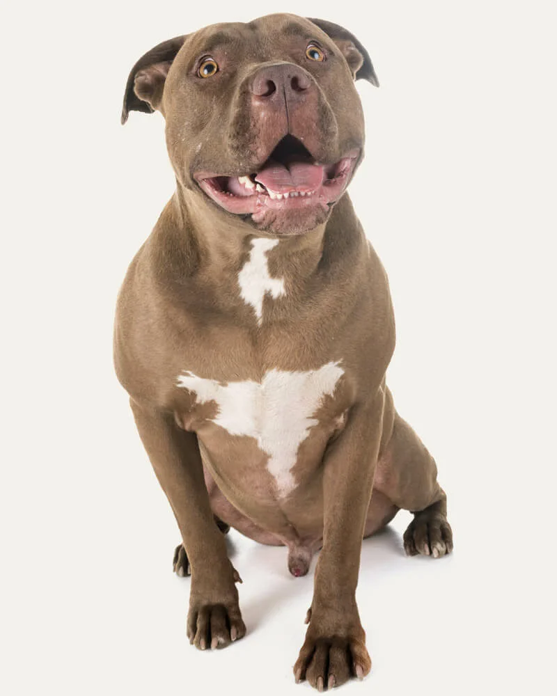

| Raça |
Tamanho |
Expectativa de vida |
País de origem |
| Pit bull |
48 cm |
14 anos |
Estados Unidos |
Visão Geral da Raça
American pit bull terrier[a], ou apenas pit bull, é uma raça pura de cães de porte médio e atléticos oriunda dos Estados Unidos.
Desenvolvida no século XIX e reconhecida em 1898 pelo UKC, pertence a família terrier, subdivisão terrier de tipo bull.
Originalmente criado para a rinha de cães, o pit bull atua hoje principalmente como cão de companhia e cão atleta em esportes lícitos, e,
em menor escala também como cão de agarre em caça lícita de grandes animais como javalis. O pit bull é um cão atlético de porte médio do tipo terrier,
e descende do extinto bull-and-terrier, cães que eram gerados pelo cruzamento entre o extinto antigo buldogue inglês e o antigo terrier inglês.